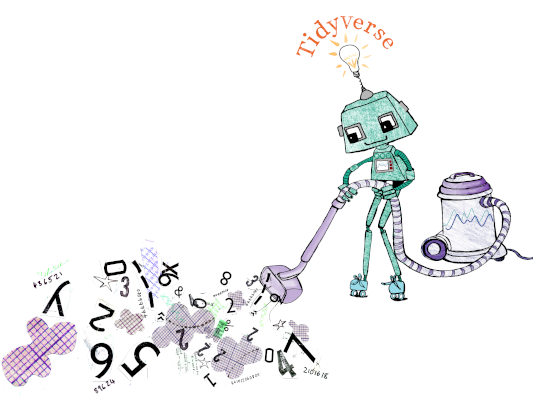
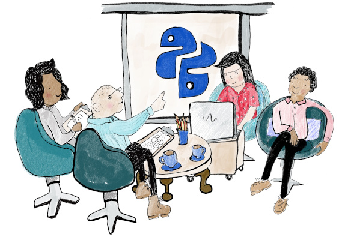

Recently, I’ve been working with an environmental scientist to refactor a large R package. Let’s call her Jane.
Jane inherited a mess of code, and had to get it working as quickly as possible. She tidied up it as best as she could in the time, but now that the company depended on it, it needed some attention. We referred to it as her “Russian Doll code” because it had many nested functions, each passing the same giant nested lists back and forth. I could see that it frustrated her every time she had to touch it as she knew there was a better way to structure the code.
We booked in some 1:1 support sessions and sat down together with the aim of making the code easier to work with.

Define the messy zone
You know when you tidy your bedroom, you optimistically pull everything out onto the floor. A few hours later, the bed is covered and there are piles of clothes everywhere. There’s no going back, and you aren’t going to be able to sleep on your bed tonight unless you clean everything. (Just me?)
Throughout the refactoring process, it was essential that we were able to continuously run and test the functionality of the package. But how could we rewrite all of our functions without affecting the functionality of the whole code base?
We decided to start with the smallest functions, and re-write the main body of the code. However, in order to ensure the higher-level functions still worked, we defined a messy zone at the start and end of each function. In the top messy zone, we would reassign any function parameters to have better names and structure. In the bottom messy zone, we would ensure that the function return matched the old return. We were then free to completely refactor the main bit of the function, knowing that the inputs and outputs were handled.
Being explicit about where the mess is “allowed” let us to focus on simplifying and clarifying the internals whilst still ensuring that the higher level code functioned as expected. It also meant that we didn’t have to decide on the structure of the function parameters initially, and we could work that out naturally as the code evolved. It also gave us clear markers of where we would need to clean up later, and avoided the issue of forgetting to change parameters everywhere.
example = function(arg1, arg2) {
# Messy zone
a_better_name = arg1$mess$ugh
helpful_name = arg2$what$is$this
# Refactor the internals
useful_result = a_better_name + helpful_name
sensible_name_tibble = a_better_name * helpful_name
# Messy Zone
results$some$mess = useful_result
results$another$naff$list = sensible_name_tibble
}Push the mess up (Push it real good)
Once we refactored the main bodies of all the small, inner functions, it was time to clean up the mess we had made earlier. We started by listing the arguments and returns of the inner functions. Once we had decided on sensible names and formats, we changed them all in one go across all functions - clearing the messy zone.
We were then free to move up a level, to the next Russian doll, pushing the mess up. We kept repeating this process, slowly moving up through the layers, from the smallest Russian doll, up until we were at the top of the code base.
Start with a blank slate
When you’re refactoring a function, it can be tempting to copy the old function into a new script, and just start editing. However, the copy-paste method for refactoring can tie you to the style of the old function, making redesign harder. We found that writing the revised functions from scratch forced us to reconsider every step of the old function and challenge every step. Ask yourself, what is this function actually trying to achieve, and how should we implement it?
Take time to design
Jane and I had one session where we didn’t touch any code at all. We talked, doodled and drew diagrams. You might leave a session like this feeling a little deflated that you didn’t achieve anything. However, that session was actually the most valuable. In the following session we made huge progress, because we had already done the hard work of thinking out the design fully. We were able to whizz through the functions, implementing our new design efficiently. We found ourselves constantly referring back to the diagrams to remind ourselves of the design choices we had made.
A good name goes a long way
We all know that it’s important to choose good names for parameters and functions. However, in this project, I was surprised just how much of a difference a good name makes. Sometimes, the only thing we would change in a function would be the names. Often a simple rename morphed the unintelligible code in front of me into a clear, readable explanation of the approach.
Test regularly
Things are going to go wrong. You are going to accidentally delete a line of code, or put a bracket in the wrong place. If you ensure that your code is always run-able then you can constantly check your code still works by running your tests. This is particularly important when implementing statistical models to ensure that numerical results are unaffected by the refactor. In R, the {testthat} package makes it easy and painless to add package tests. If you’re using git, using continuous integration to run an R package check on every commit takes away the burden of remembering to stop and test.
Why rather than How
The code was initially what I would call “How” programming. The different components of the functions were grouped by how the calculations were computed programmatically rather than why we were calculating them. This made it hard for someone new to the code to understand what each function did.
I’m not an environmental scientist, so I don’t understand all of the science behind Jane’s complex model. However, by asking questions about what she was trying to achieve, we re-grouped the different stages of each function in terms of the science, rather than the implementation. Changing focus of the code to the scientific method made it much clearer to follow.

Do it with a friend
Refactoring can be quite daunting. You’ve often got lots of moving parts and it can be difficult to hold both the overall design, and the small technical details in your head at the same time. Having someone to pair program with you makes this much easier. In our sessions, Jane would “drive”, coding the finer technical implementations, whilst I was the passenger, observing and challenging her on whether the implementation she was writing fitted in with our grand design. The person helping you doesn’t have to understand the code in detail, in fact sometimes it helps if they don’t! It can also be more fun to work collaboratively, we would celebrate together when we were able to delete a large chunk of obsolete code.
Wrap up
Refactoring code properly takes time, and sometimes it can be hard to justify the cost. However, poorly written code is difficult to develop, time consuming to maintain and tends to mask bugs which are hiding in the cobwebs of functions that no-one really understands any more. Hopefully these tips will help the next time you get the chance to refactor some code. Here they are again:
- Define the messy zone
- Push the mess up
- Start with a blank slate
- Take time to design
- A good name goes a long way
- Test regularly
- Why rather than How
- Do it with a friend
This post first appeared at jumpingrivers.com/blog